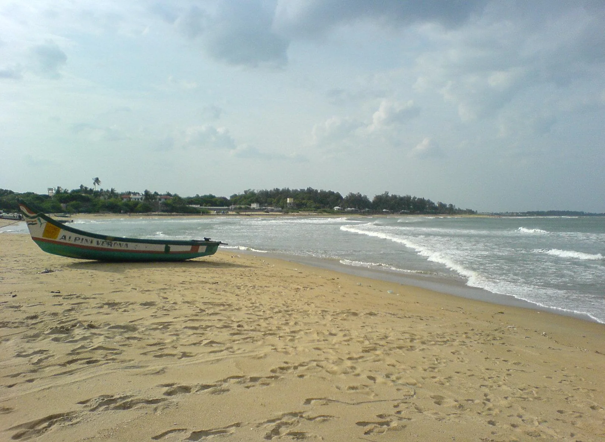

Kovalam (Covelong)
Tamil Nadu, Inde · surf

Village de pêcheurs au sud de Chennai, devenu le spot de surf le plus connu du Tamil Nadu. La pointe rocheuse et le beach break offrent des vagues souvent modestes, propices à l’apprentissage.
- Lieu
- Tamil Nadu, Inde
- Niveau
- Débutant
- Activités
- surf
- Type d'eau
- Mer / océan
- Coordonnées
- 12.79, 80.25 (position approximative du secteur)
Dangers à connaître
- Courants d’arrachement fréquents sur cette côte.
- Cyclones possibles d’octobre à décembre.
Le conseil d'Ocean Buddy
Passe par l’une des écoles du village et laisse la priorité aux pêcheurs sur la plage.
Ouvrir dans Ocean Buddy Télécharger sur l'App Store
Source : Fiche Ocean Buddy · septembre 2026 · à vérifier localement.